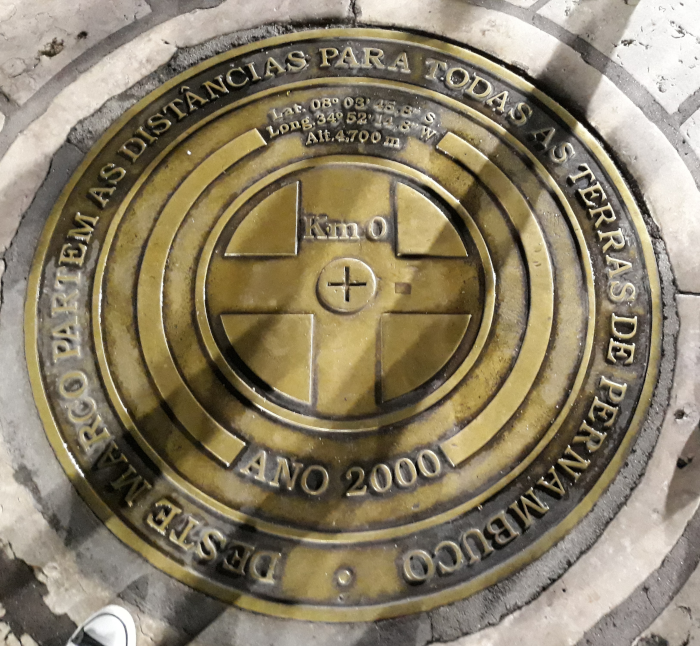
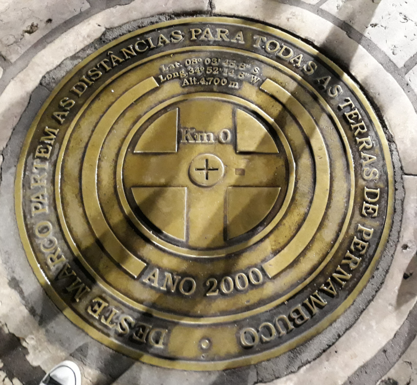

Palco de muitos shows, frevo e maracatú, o Marco Zero é um dos pontos turísticos mais atrativos do Recife.
Localizado no bairro do Recife Antigo, as ruas que foram o coração da cidade para chegada e saída de mercadorias através do Porto, comércio e defesa, hoje abriga em seu entorno aparelhos culturais, turísticos e até de inovação. Gostou?
Então fica comigo, que eu te conto essa história!
A história da Praça Barão do Rio Branco, que ficou conhecida como Praça do Marco Zero de Recife, começou bem antes da inauguração do espaço atual em 1938, no coração do Recife Antigo. Além de marcar o ponto inicial de todas as rodovias que saem da capital pernambucana, o local também marca o início da expansão da cidade pela invasão holandesa, que ocorreu entre 1630 e 1654.
Com pedras de tonalidade avermelhada, o centro do Marco Zero exibe a rosa dos ventos do pintor Cícero Dias. A praça ainda conta com uma estátua em bronze, de 2,80m de altura, homenageando a figura que que batiza o endereço, o Barão de Rio Branco, esculpido por Felix Charpentier.
 
